Analytic volume projection
Native pixels equal the reference; independent sample-value oracle passes. Raster edge antialiasing differs.
Case receipt · Source/runtime provenance
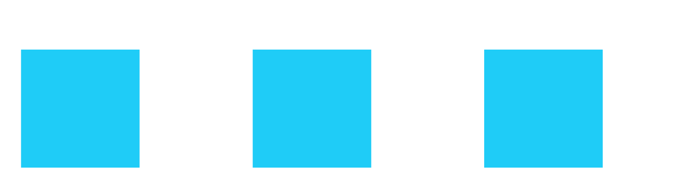
Reference/native blink
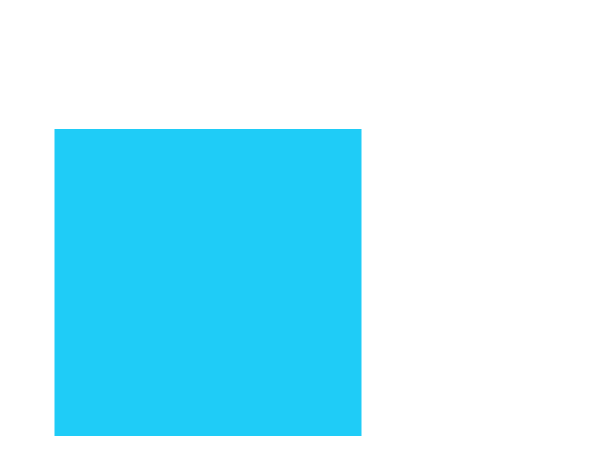

Full parity remains unqualified. These are representative actual-host comparisons, with failed cases retained. Unless otherwise labeled, plates show SurfViewJS, ScalaFIM native (when admitted), then production raster fallback at the same pixel scale. Images are not registered, recolored or cropped to improve agreement.
Historical and current modules have separate source/runtime hashes. Captured endpoints do not establish complete action replay, per-element visibility or full-family admission. Scope and reproduction · All 636 variants · Checks · Artifact manifest
Native silhouette aligns; strict fold pixels and raster antialiasing remain failures.
Case receipt · Source/runtime provenance
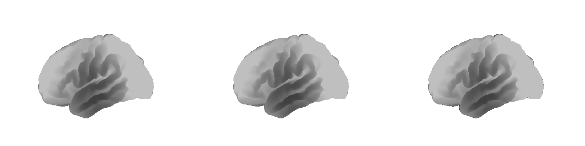
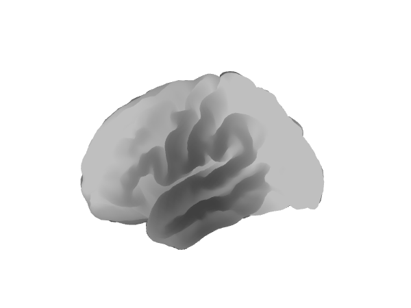
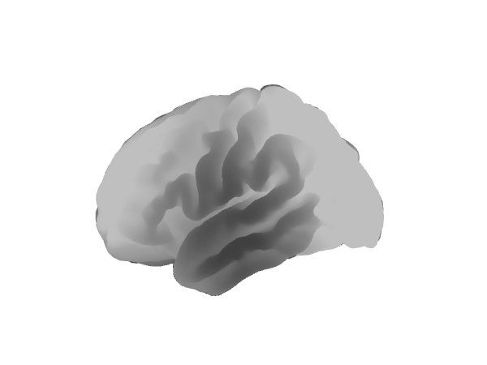
All panel/ray identities and actual fallback resize/disposal checks pass; strict pixel differences remain.
Case receipt · Source/runtime provenance
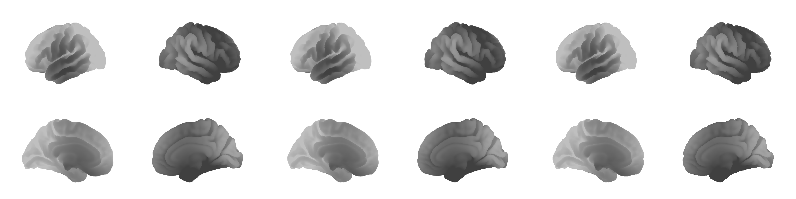
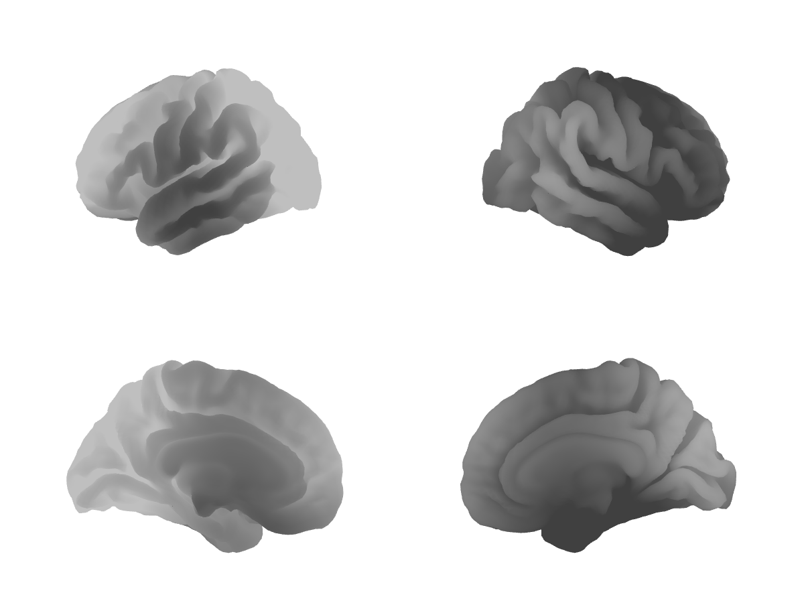
Native pixels equal the reference; independent sample-value oracle passes. Raster edge antialiasing differs.
Case receipt · Source/runtime provenance


Reference translucent full-width halo washes over the black core. ScalaFIM uses opaque side bands. This is a semantic mismatch, not just antialiasing.
Case receipt · Source/runtime provenance
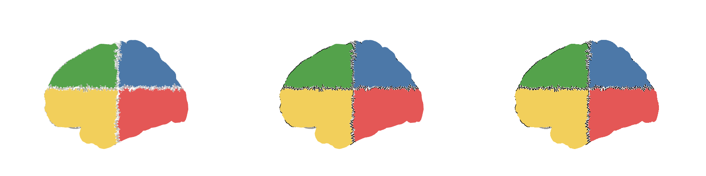
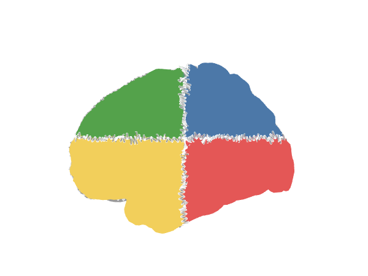
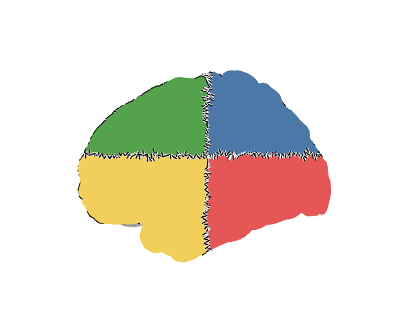
Matching sphere tessellation reduces maximum native channel error to 3; strict limit remains 2.
Case receipt · Source/runtime provenance
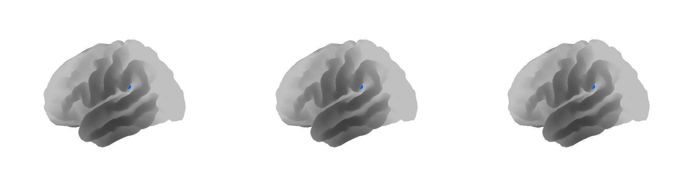
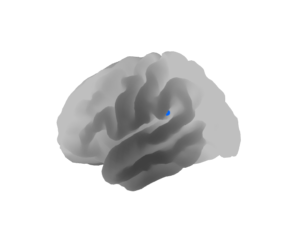
The explicit public-client route uses signed colors and declared overlay order. Native foreground IoU is 1; tube and edge pixels retain strict failures.
Case receipt · Source/runtime provenance
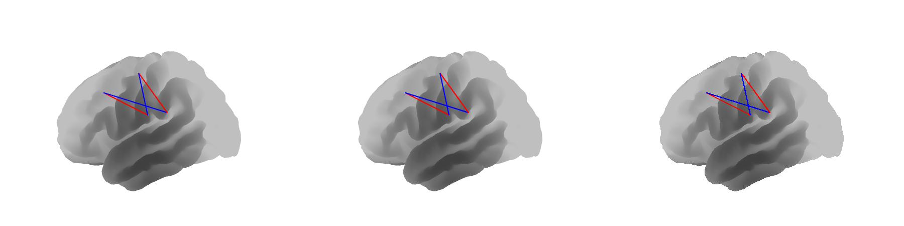
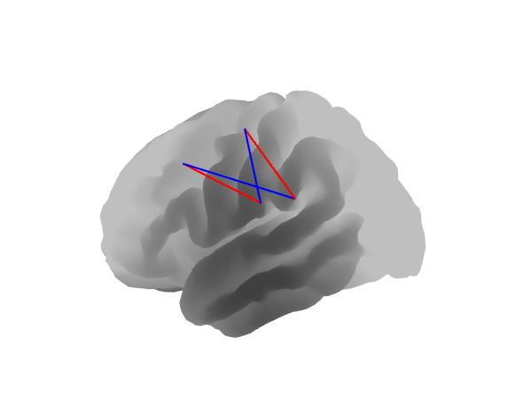
The pinned reference leaves the marker at its base vertex. Independent source coordinates identify this discrepancy; the original failure is retained.
Case receipt · Source/runtime provenance
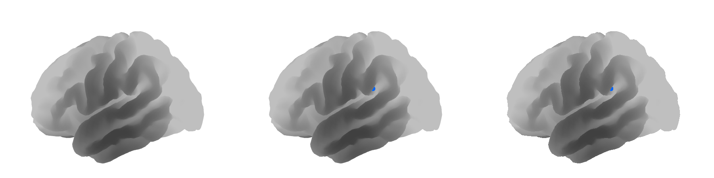
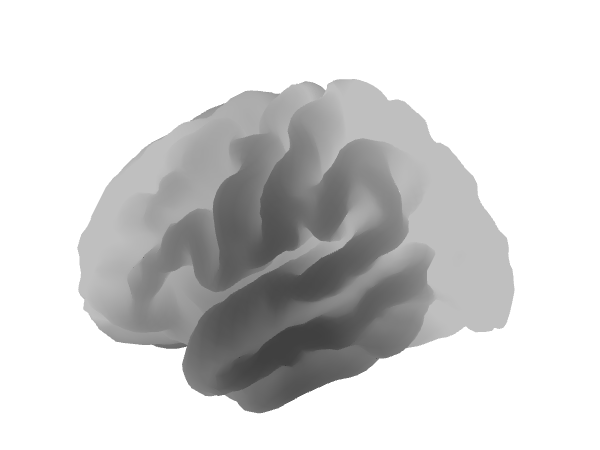

An explicitly declared client updates the public marker record using the current morphed vertex. All 11 measured anchor cases pass. This image has native maximum channel error 3, still above the strict limit of 2.
Case receipt · Source/runtime provenance
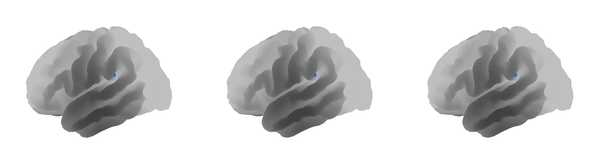
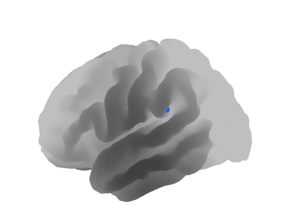
Left: SurfViewJS. Right: actual JavaFX ImageView snapshot. Runtime artifact hashes are retained; published-pixel equality, resize-back and disposal pass. Strict pixel comparison fails.
Case receipt · Source/runtime provenance
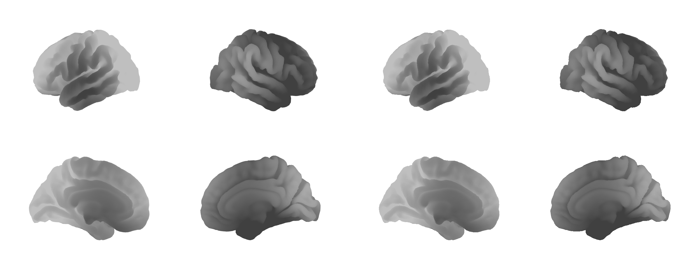
Six browser flat-map endpoints equal the reference byte-for-byte. Below, left is the reference and right is the actual JVM flat map. Strict JVM comparisons fail (maximum channel error 93–95); glyph and edge differences remain. The separate linked-marker image establishes nonblank rendering only. Repeated-reference calibration, physical pointer replay and reference linked-marker anchor checks remain unqualified.
Reviewed endpoint receipt · Reviewed JVM checks · Original overbroad status retained · JVM failures
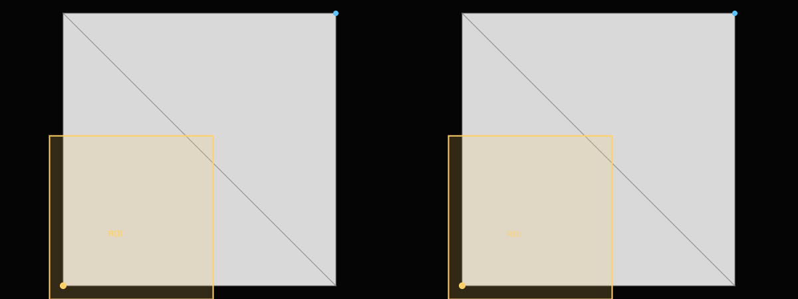